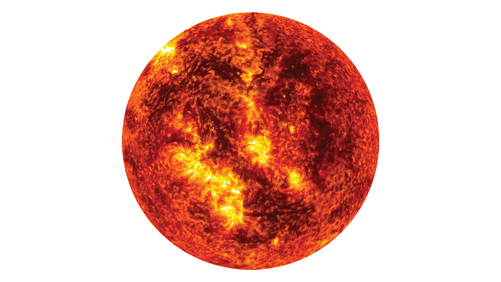

Күн (Sol)
G2V типіндегі жұлдыз: Системалық сипаттама
Күн — Күн жүйесінің орталығы және Жерге ең жақын жұлдыз. Бұл ыстық плазмадан тұратын тамаша шар. Оның гравитациялық күші Күн жүйесіндегі барлық денелерді, соның ішінде Жерді де, орбитада ұстап тұрады. Күннің энергиясы ядролық синтез (Nuclear Fusion) арқылы өндіріледі.
Қызықты Деректер (DATA ARRAY)
Жасы:
Күн шамамен 4.6 миллиард жыл. Ол өзінің өмір циклінің ортасында тұр.
Температурасы:
Күннің беткі қабатының температурасы шамамен 5,500 °C, ал ядросында 15 миллион °C жетеді.
Сутегі Жануы:
Күн әр секунд сайын 600 миллион тонна сутегіні гелийге айналдырып, 4 миллион тонна материяны энергияға айналдырады.
Көлемі:
Күннің ішіне шамамен 1.3 миллион Жер планетасы сыйып кетер еді.
Жарық Жылдамдығы:
Күн сәулесі Жерге жету үшін орташа есеппен 8 минут 20 секунд қажет.
Болашағы:
Тағы 5 миллиард жылдан кейін Күн қызыл алыпқа айналып, Жер орбитасына дейін кеңейеді.